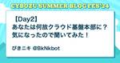

Cybozu Inside Out | サイボウズエンジニアのブログ
https://blog.cybozu.io/
サイボウズ株式会社、サイボウズ・ラボ株式会社のエンジニアが提供する技術ブログです。製品やサービスの開発、運用で得た技術情報やエンジニアの活動、採用情報などをお届けします。
フィード
ネットワークコネクションの切断と Go の HTTP/2 クライアントのタイムアウト 1
1
Cybozu Inside Out | サイボウズエンジニアのブログ
こんにちは、クラウド基盤本部の向井です。 幸いにも cybozu.com を運用しているデータセンター内のネットワークは（担当チームの尽力により）安定していますが、ネットワークコネクションは常に切断されるリスクがあることを念頭においておく必要があります。その原因が一時的なネットワークの不調だったり、関係するコンポーネントのメンテナンスに伴う瞬断であったりした場合、アプリケーションは適切にリトライするなどして処理を継続したいところです。一方で、このような場合には OS によるプロトコルの実装やライブラリによって隠蔽された動作により、一見不思議に見える挙動に悩まされることも少なくありません。本記事…
1日前
iOSDC Japan 2024 にプラチナスポンサーとして協賛します！
Cybozu Inside Out | サイボウズエンジニアのブログ
iOSDC Japan 2024 にプラチナスポンサーとして協賛します！ こんにちは、iOS エンジニアの Kyome（@Kyomesuke）です。 今年も iOSDC Japan の時期が近づいてまいりました！ サイボウズは2024年8月22日から8月24日に開催されるiOSDC Japan 2024に、前年に引き続きプラチナスポンサーとして協賛させていただきます！ 「iOSDC Japan」とは、iOS 関連技術をテーマとした iOS 技術者のためのカンファレンスです。 今年も現地開催＋オンライン配信でのハイブリッド開催が予定されています。 サイボウズでは kintone やサイボウズ O…
1日前

構造化ログと実装 -Goのslogによる実践- 3
Cybozu Inside Out | サイボウズエンジニアのブログ
この記事は、CYBOZU SUMMER BLOG FES '24 (クラウド基盤本部 Stage) DAY 4の記事です。 クラウド基盤本部Cloud Platform部の pddg です。cybozu.comのインフラ基盤移行まだまだがんばっています。 今回の記事は、社内向けに書いていた「構造化ログとは何か・Goのslogパッケージをどう使うべきか」という話を一般向けに書き直したものです。なんとなくslogを使っているという状態から、チームでどのようにログを取るべきか方針を決められるようになるくらいの状態に持っていくための一助になればと思います。 背景 構造化ログに求められるもの 機械的に読…
3日前
【Day3】あなたは何故クラウド基盤本部に？気になったので聞いてみた！
Cybozu Inside Out | サイボウズエンジニアのブログ
こんにちは！クラウド基盤本部、PDX（Platform Developer eXperience）所属の@BkNkbot です。先日から、サイボウズのクラウド基盤本部の所属メンバーが記事を執筆する「クラウド基盤本部Stage」が始まっています！ というわけで、最初の3日間は私から「インタビュー記事」をお届けします（今日は最終回です）。協力していただいたメンバー・その方のチーム紹介を兼ねているので、この記事を皮切りに今のクラウド基盤本部の情報を知り、今後公開される記事を少しでも楽しく読んでもらえると嬉しいです！ これまでに投稿した記事もありますので、こちらにあわせてお楽しみください！ blog.…
4日前

【Day2】あなたは何故クラウド基盤本部に？気になったので聞いてみた！ #CybozuSummerBlogFes2024
Cybozu Inside Out | サイボウズエンジニアのブログ
こんにちは！クラウド基盤本部、PDX（Platform Developer eXperience）所属の@BkNkbotです。昨日から、CYBOZU SUMMER BLOG FES '24でクラウド基盤本部の所属メンバーが記事を執筆する「クラウド基盤本部Stage」が始まっています！ というわけで、最初の3日間は私から「インタビュー記事」をお届けします（今日はその2日目です）。協力していただいたメンバー・その方のチーム紹介を兼ねているので、この記事を皮切りに今のクラウド基盤本部の情報を知り、今後公開される記事を少しでも楽しく読んでもらうことを目指しています。 昨日投稿したインタビュー記事もあり…
5日前
社内イベントでフロントエンドクイズ大会を開催しました 1
Cybozu Inside Out | サイボウズエンジニアのブログ
この記事は、CYBOZU SUMMER BLOG FES '24 (Frontend stage) DAY4 の記事です。 こんにちわ。フロントエンドエキスパートチームの@nus3_です。 サイボウズでは開発、運用に関わる様々なチームや職能の人が集まって交流を深める社内イベントとして開運夏まつり 2024 が 7 月 2 ~ 4 日の 3 日間で開催されました。 開運夏まつり 2024 については詳しくは次の記事をご覧ください。 組織を強くするために！サイボウズ社内テックカンファレンス開催 この開運夏まつり 2024 の初日に Cybozu Frontend Day 2024 Summer と…
6日前
【Day1】あなたは何故クラウド基盤本部に？気になったので聞いてみた！ #CybozuSummerBlogFes2024 1
Cybozu Inside Out | サイボウズエンジニアのブログ
こんにちは！クラウド基盤本部、PDX（Platform Developer eXperience）所属の@BkNkbotです。今日から最終日の8/20(火)まで、CYBOZU SUMMER BLOG FES '24でクラウド基盤本部Stageが始まり、毎日クラウド基盤本部のメンバーが記事を執筆します。 ……というわけで、最初の3日間は私から「インタビュー記事」をお届けします。協力していただいたメンバー・その方のチーム紹介を兼ねているので、この記事を皮切りにして今のクラウド基盤本部を知り、今後公開される記事を少しでも楽しく読んでもらえると嬉しいです！ ※ この記事は、CYBOZU SUMMER …
6日前
ワークショップ「コンピュータの仕組みを学ぶ電子工作入門」を開催しました 1
Cybozu Inside Out | サイボウズエンジニアのブログ
こんにちは、サイボウズ・ラボの内田です。2024 年 7 月に 3 件の電子工作入門ワークショップの講師を務めました。本記事ではワークショップの内容や開催当日の様子などを紹介します。 電子工作入門ワークショップについて 正式名称は「コンピュータの仕組みを学ぶ電子工作入門」です。3 時間ほどの構成で、Raspberry Pi Pico を用いた電子工作入門から始まり、最終的にプログラミング言語インタプリタの作成を目指します。マイコンを用いた電子工作を通じて、コンピュータが動作する仕組みを学ぶことが目的です。 ワークショップの様子（at SAJセミナールーム） U-22 プログラミング・コンテスト…
7日前
組織を強くするために！サイボウズ社内テックカンファレンス開催 2
Cybozu Inside Out | サイボウズエンジニアのブログ
開催の様子 こんにちは！サイボウズのhokatomo（@tomoko_and）です。福岡拠点に所属で、開発系の社内イベントの運営や協賛をしています。 今回、サイボウズで開発・運用に関わる様々なチームや職能の人が集まる社内テックカンファレンス「開運夏まつり2024」*1を3日間に渡って開催しました。 この記事を通じて、 サイボウズにはこういった会を開催する文化がある 社内テックカンファレンス開催のススメ 以上が伝われば嬉しいです！ *1:開発・運用の略で「開運」です
8日前
サイボウズは JaSST'24 Niigata で協賛＆登壇します！
Cybozu Inside Out | サイボウズエンジニアのブログ
こんにちは、QA（品質保証）エンジニアの斉藤です。 サイボウズは、2024年8月9日(金)に開催されるJaSST'24 Niigataにゴールドスポンサーとして協賛しています。 また、スポンサーセッションにて登壇いたしますので、本記事ではその紹介をさせてください。 協賛について サイボウズでは「チームワークあふれる社会を創る」という企業理念のもと、kintoneやGaroon、 サイボウズ Office、メールワイズなどチームを支えるサービスを開発しています。 その中でサイボウズのQAエンジニアは開発プロセス全体を通して品質を高める活動を行なっています。 そんな私たちが日々の活動でお世話になっ…
11日前

20日間に約100の記事を投稿する夏フェス「CYBOZU SUMMER BLOG FES '24」を開催します！
Cybozu Inside Out | サイボウズエンジニアのブログ
総勢80名を超えるサイボウズのエンジニアがお送りする技術ブログの夏フェス・CYBOZU SUMMER BLOG FES '24の紹介記事です。
15日前
スクラムマスターの世界に飛び込んだリアルな心境
Cybozu Inside Out | サイボウズエンジニアのブログ
こんにちは、サイボウズでGaroonモバイル開発チームのスクラムマスターをしている東條です。 私はスクラムマスターになってまだ半年も経っていません。駆け出しの身として、スクラムマスターとしての役割は何なのかを日々模索しています。 本記事は、サイボウズのスクラムマスター職能で開催しているリレーブログ企画の一本です。 リレーブログ企画：スクラムマスターって何をするの？チームを健全に保つ多様なリーダーシップの実際 対象読者：スクラムマスターが近くにいるけどありがたみを感じたことがない人 学習成果 (Learning Outcome)：記事の内容に関連する悩みについて、近くのスクラムマスターに相談でき…
16日前
QA Gathering Day 2024年7月 の開催レポート 〜社内のQAエンジニアの横のつながりを強化するために〜
Cybozu Inside Out | サイボウズエンジニアのブログ
こんにちは！2024年新卒入社したQAエンジニアの水谷です！先日サイボウズ東京オフィスで開催された「QA Gathering Day 2024年7月」の開催レポートを公開します。 「QA Gathering Day」は、サイボウズのQAエンジニア系の職能のメンバーが集まる社内イベントで、今回は3回目の開催となりました。 今回、記事を書いている水谷は司会を担当しました。 前回の記事はこちらです。 blog.cybozu.io イベント概要 開催日：2024年7月4日(木) 場所 ：サイボウズ東京オフィス 参加者：約50名（QAエンジニア、プロダクトセキュリティエンジニア、Platform QAな…
1ヶ月前
プロダクトを良くしたい人
Cybozu Inside Out | サイボウズエンジニアのブログ
こんにちは。 kintoneのAndroidチームに所属している向井田 (@mr_mkeeda) です。 私は元々Androidエンジニアですが、最近まで自チームの抱えている問題意識と向き合うためにスクラムマスターを兼務していました。 今回のブログは、サイボウズのスクラムマスターで企画したリレーブログの1つになります。 このリレーブログは「スクラムマスターとは何をするのか？」を様々な事例を通して考える企画になっています。 blog.cybozu.io 私自身、スクラムマスターを名乗ってから「スクラムマスターとは何か？」が分からないまま仕事をしてきました。 そんなときにこのリレーブログ企画が始ま…
1ヶ月前
初めてWWDCに現地参加してきました！
Cybozu Inside Out | サイボウズエンジニアのブログ
こんにちは、iOS エンジニアの Kyome（@Kyomesuke）です。 WWDC（Worldwide Developers Conference）とは Apple が年に１度開発者向けに開催しているカンファレンスです。OS や SDK などの最新技術が発表され学ぶことができ、世界中の Apple プラットフォーム向けソフトウェアエンジニアと交流できるイベントとなっています。 この WWDC に現地参加する最大の魅力は In-person Labs と呼ばれるセッションで、Apple の社員であり各分野のエキスパートであるエンジニアやデザイナーと直接質疑することができます。 今回はそんな W…
1ヶ月前
カンファレンスの恩恵を150%に高める！Garoon MATSULI Teamを紹介します。
Cybozu Inside Out | サイボウズエンジニアのブログ
Garoon MATSULI Teamの酒井（@sakay_y）です。このチームは何なのか、なぜ結成したのかなどを記録に残したいとおもって記事にします。 Garoon MATSULI Teamとは？ 2024年の3月に結成されたGaroon開発のサブチームです。以下のアクロニムによって名付けられました。 Meetups And Technical Sessions for Updates, Learning, and increase Insights. 目的 カンファレンスを軸に、受けられる恩恵を150％に高めるチーム！ 結成の背景 このチームが結成されるまで、基本的にはコネクト支援チームを…
1ヶ月前
リレーブログ企画：自動テストをQAが実装可能にする取り組み「QAムキムキ化」
Cybozu Inside Out | サイボウズエンジニアのブログ
こんにちは。kintone開発チームでスクラムマスター兼QAをしている「とうま」（@toma_cy）です。 サイボウズではQAについてより多くの方に知ってもらう啓蒙活動の一環として、リレーブログ企画を開催しています。 blog.cybozu.io 今回は、自チームで行っている「QAムキムキ化」の活動について書きたいと思います。 QAムキムキ化とは 自動テスト（主にE2E）をQAが実装可能にするための取り組みです。 「QAムキムキ化」という表現は社内の他チームが名付けたものですが、響きがキャッチーなので真似させてもらっています。 この取り組みは、他チームも多かれ少なかれやっているのですが、ここで…
1ヶ月前
Kotlin Fest 2024 にスポンサーとして参加しました！
Cybozu Inside Out | サイボウズエンジニアのブログ
こんにちは！kintoneチーム所属のAndroidエンジニア、トニオ（@tonionagauzzi）です。 2024年6月22日（土）に Kotlin Fest 2024 が開催されました。 サイボウズはスポンサーとして協賛し、会場にブースを設置しました！ 参加レポート 今年のKotlin Festは、2019年以来のオフライン開催でした。 場所はベルサール渋谷ファーストです。 Kotlin Festのセッション 今年も多くのセッションがあり、Kotlinに関する選りすぐりの発表が行われました！ 僕自身はブースで多くの時間を過ごしたので、録画や資料を追って確認したいと思います！ サイボウズブ…
1ヶ月前
2024年もAndroidエンジニアでGoogle I/O報告LT会を開催しました！
Cybozu Inside Out | サイボウズエンジニアのブログ
こんにちは、kintone開発チームのAndroid担当のトニオ（@tonionagauzzi）です。 今年もGoogle I/O報告LT会を開催しましたので、その様子をお伝えします。 Google I/Oとは？ Google I/Oとは、Googleが毎年開催する開発者向けイベントです。 今年は去年以上にAI関連サービスの発表が多く、見応えタップリだったのではないかと思います！ LT会について 今回紹介するLT会は、サイボウズの各プロダクトを担当するAndroidエンジニアが集い、Google I/Oで気になったセッションをライトニングトーク形式で紹介しあうイベントです。 2022年(第1回…
2ヶ月前
Waffle Festival2024に協賛、QAエンジニアの斉藤裕希さんが中高生・大学生向けにスピーチをしました
Cybozu Inside Out | サイボウズエンジニアのブログ
現地会場の様子 こんにちは！サイボウズ People Experienceチームのhokatomo(@tomoko_and)です。 2024年5月に開催された「Waffle Festival2024」にサイボウズはシルバースポンサーとして協賛しました。 Waffle Festival 2024は、ITの仕事や学びがまるごとわかる、女子＆ノンバイナリーの中高生・大学生向けのテックイベントです。 当日は現地原宿会場で、サイボウズのQAエンジニア斎藤裕希さんがスピーチをしました。当日の様子や、この協賛にあたりPeople Experienceが担当した範囲についてレポートします。 waffle-fe…
2ヶ月前
初心者スクラムマスターはどうやってスクラムをチームに定着させたのか？
Cybozu Inside Out | サイボウズエンジニアのブログ
はじめに こんにちは。開発者とスクラムマスター(以下、SM)をしている金丸です。 サイボウズのGaroonという製品の開発チームに所属しています。 サイボウズではSMのことを社内外問わず、より多くの人に知ってもらう啓蒙活動の一環として、サイボウズのSM達によるリレーブログ企画を開催しています。 blog.cybozu.io チームでスクラムを始めて約1年経ち、良い機会と感じましたので、このリレーブログに参戦させていただきます。 今回は、いち開発者がどうやってSMを始めたのか、そして自身の所属するチームにどうやってスクラムを定着させていったのか、自らの経験をベースにお話させていただこうと思います…
2ヶ月前
リレーブログ企画：サイボウズ Office/MailWiseチームにおける改善の取り組み「困りごと共有会」
Cybozu Inside Out | サイボウズエンジニアのブログ
こんにちは、QA（品質保証）エンジニアの斉藤です。サイボウズ Office/MailWiseチームに所属しています。 今回はリレーブログ企画ということでチームで行っている改善の取り組み「困りごと共有会」について書きたいと思います。 困りごと共有会とは kintoneのアプリに日々の「困りごと」を登録していき、月に1回そのアプリをサイボウズ Office/MailWiseのQAメンバーで確認して改善策を検討する会です。 「特に強く困ってるわけではないけれど、ハードル低く話してみる」というコンセプトで開催しています。 「この作業がしんどいので手間を減らせないか」「これに時間がかかっているので、もっ…
2ヶ月前
サイボウズは JaSST'24 Kansai で協賛＆登壇します！
Cybozu Inside Out | サイボウズエンジニアのブログ
こんにちは、QA（品質保証）エンジニアの斉藤です。 サイボウズは、2024年6月21日(金)に開催されるJaSST'24 Kansaiに協賛しています。 また、テクノロジーセッションにて登壇いたしますので、本記事ではその紹介をさせてください。 協賛について サイボウズでは「チームワークあふれる社会を創る」という企業理念のもと、kintoneやGaroon、 サイボウズ Office、メールワイズなどチームを支えるサービスを開発しています。 その中でサイボウズのQAエンジニアは開発プロセス全体を通して品質を高める活動を行なっています。 そんな私たちが日々の活動でお世話になっているソフトウェアテス…
2ヶ月前
リレーブログ企画：サイボウズ QAエンジニアの取り組み紹介
Cybozu Inside Out | サイボウズエンジニアのブログ
こんにちは。QAエンジニア マネージャーの匠です。 昨今、「QAエンジニア」という言葉が少し一般的になってきた印象はありますが、ひとくちにQAエンジニアといってもその活動内容は多岐にわたり、また組織やチームによって担う役割が異なる場合も多くあります。 サイボウズでは各チームが自律的に動きやすい環境を整えてきたこともあり、画一的な開発プロセスではなく、各チームが必要なものを検討して日々活動しています。 当然、QAエンジニアの役割や取り組みも各チームで異なります。 このリレーブログ企画では、サイボウズのQAエンジニアについてより多くの方に知っていただくことを目的に、数か月にわたって、各チームに所属…
2ヶ月前
サイボウズは Kotlin Fest 2024 にスポンサーとして協賛します！
Cybozu Inside Out | サイボウズエンジニアのブログ
こんにちは！kintone チーム所属の Android エンジニア、トニオ（@tonionagauzzi）です。 サイボウズは、2024年6月22日(土) に開催される Kotlin Fest 2024 へスポンサーとして協賛し、ブースを出展します！ Kotlin Fest とサイボウズ Kotlin Fest は、「Kotlin™ を愛でる」をビジョンに、Kotlin に関する知見の共有や、Kotlin ファンとの交流の場が提供される技術カンファレンスです。 今年は、ベルサール渋谷ファーストにてオフラインで開催されます！🙌 サイボウズでは、Android エンジニアなどが Kotlin を…
2ヶ月前
スクラムをやっていないチームでスクラムマスターとして振る舞ってみた
Cybozu Inside Out | サイボウズエンジニアのブログ
こんにちは！kintone Design System（kDS）チームでスクラムマスター（以降 SM）をやっている中川（@hayate4th）です。 サイボウズでは SM の仕事をより多くの方々に知ってもらう啓蒙活動の一環として、リレーブログ企画を開催しています。 blog.cybozu.io 対象者: スクラムマスターが近くにいるけどありがたみを感じたことがない人 学習成果: 記事の内容に関連する悩みについて、近くのスクラムマスターに相談できるようになる この記事では、スクラムはやっていないが SM 的な振る舞いをするメンバーがいることによってチームにどういった変化があったのかお話ししていき…
2ヶ月前
サイボウズは JaSST'24 Tohoku で協賛＆登壇します！
Cybozu Inside Out | サイボウズエンジニアのブログ
こんにちは、QA（品質保証）エンジニアの銭丸です。 サイボウズは 2024年5月31日(金)に開催されるJaSST'24 Tohokuに、ゴールドスポンサーとして協賛します。 また、スポンサーライトニングトークスにて登壇いたしますので、本記事ではその紹介をさせてください。 協賛について サイボウズでは「チームワークあふれる社会を創る」という企業理念のもと、kintoneやGaroon、サイボウズ Office、メールワイズなどチームを支えるサービスを開発しています。 その中でサイボウズのQAエンジニアは開発プロセス全体を通して品質を高める活動を行なっています。 そんな私たちが日々の活動でお世話…
2ヶ月前
スクラムチームで始めたAndroidアプリのテスト駆動開発
Cybozu Inside Out | サイボウズエンジニアのブログ
こんにちは！kintoneチーム所属のAndroidエンジニア、トニオ（@tonionagauzzi）です。 サイボウズでは、スクラムマスター（SM）の仕事をより多くの方々に知ってもらう啓蒙活動の一環として、リレーブログ企画を開催しています。 blog.cybozu.io 対象者: スクラムマスターが近くにいるけどありがたみを感じたことがない人 学習成果: 記事の内容に関連する悩みについて、近くのスクラムマスターに相談できるようになる この記事では、スクラムの開発チーム目線で、私が所属するAndroidチームが実践しているテスト駆動開発（TDD）という手法を紹介します。 この記事を通じて、社外…
3ヶ月前
アクセシビリティの改善のために React Aria を活用しています
Cybozu Inside Out | サイボウズエンジニアのブログ
こんにちは！DOGO プロジェクトでソフトウェアエンジニアとして活動している @nissy_dev です。 DOGO プロジェクトでは、React Aria を活用してアクセシビリティの改善を行っています。 今回の記事では、React Aria を国内にもっと広めて行きたいということで、React Aria を利用することに決めた理由を振り返りつつ、React Aria について簡単に紹介します。 目次 OSS を活用した効率なアクセシビリティの改善 ライブラリの選定 React Aria の概要 Next.js App Router との相性 終わりに OSS を活用した効率なアクセシビリテ…
3ヶ月前
WKWebViewをSwiftUIに適したインターフェースで扱えるラッパーライブラリをOSSとして公開しました！
Cybozu Inside Out | サイボウズエンジニアのブログ
はじめに こんにちは、iOSエンジニアのKyome（@Kyomesuke）です。 私が担当しているkintoneのモバイルアプリはWKWebViewを用いたハイブリッドアプリなのですが、UIKitからSwiftUIへのリプレイスにあたってWebViewをSwiftUIに適したインターフェースで（つまり宣言的UIで）実装したいという需要が高まっていました。 しかし現在、SwiftUIと互換性のある宣言的UIなWebViewのAPIはAppleから提供されていません。 そこで、WKWebViewをSwiftUIに適したインターフェースで扱えるようにしたラッパーライブラリを開発しました！ この記事で…
3ヶ月前